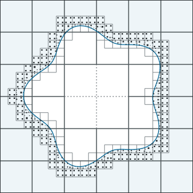

Jan Niklas Schmäke
Mechanical engineer by training, working in computational mechanics research at Hochschule Düsseldorf — mostly on unfitted finite element methods, multi-level hp refinement and immersed boundaries, and the software that goes with them.

01Projects
- Unfitted.jl Unfitted multi-level hp refinement on Cartesian grids with finite‑cell immersed‑boundary integration. Julia
- FoamGen.jl Open-cell foam geometries for finite element and immersed‑boundary tests. Julia
- Oritone A color theme and scientific colormaps for editors, terminals and visualization, after Okabe & Ito. Theme
- Oritone LaTeX Document classes and a Beamer theme for theses, manuscripts, CVs and slides. LaTeX
02Publications & Talks
Publications
- Unfitted multi-level hp refinement for localized and moving solution features
- Efficient thermo-viscoplastic analysis using a multi-level hp‑finite cell method with non‑negative moment fitting
Talks
-
Unfitted superposition refinement for moving interfaces
-
Unfitted overlay hp‑refinements on axis-aligned finite element meshes
-
Error-controlled multi-level hp finite cells in the realm of elastoplastic analysis